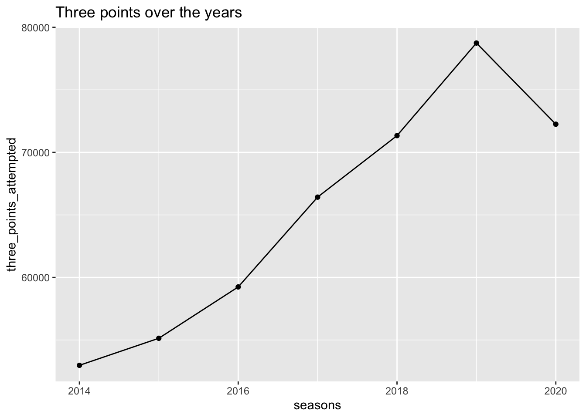

Chapter 7 Conclusion
7.1 COVID
We were surprised to see that there was not a strong trend in change between pre- and post-COVID games. It looked like there was a slight decrease in defensive, and therefore overall performances. But, when compared the control data from the year before, we felt less confident there was a strong effect. Furthermore, the sample size was very small for each time period – any differences could just be a fluke. But, the data for players that contracted COVID was somewhat notable. Just looking at the graph led us to look into what happened to Mo Bamba after such a dramatic drop in performance, which revealed that he has been struggling with long-term COVID symptoms. It might be worth further investigation as he continues to play more games, also looking into other athletes dealing with long-term effects of COVID. Some players got left out of the analysis as they opted out of the bubble because of severe COVID symptoms. These players might be worth a closer look along with Mo Bamba to find more evidence of COVID on athletic performance.
The graphs also would have benefited from some side-by-side facets along the type of rating. However, because defensive ratings are measured differently, the x-axis needed to be flipped. Apparently, it is a common complaint in the R community that there is no easy way to change the scale of individual facets. Furthermore, the player data could have benefited from a facet as well, but because the time period variables were different between dataframes, it was difficult to work that out.
7.2 Kobe Bryant Demise Effect
The conclusion of the effect of Kobe’s death can be divided into 3 parts:
Not every team showed a significant change in their performance post 26th of January. Few teams like the San Antonio Spurs, Dallas Mavericks, Indiana Pacers and Utah Jazz showed a significant slump in their net ratings (some went from +ve top -ve), while the Brooklyn nets showed significant improvement.
Inorder to find out if the dip in performance is something recurring and not a one time thing, we plotted data for a few selected teams (explanation for selected teams in the results section). Turns out our suspicion was right. Unexpectedly, the Lakers and Clippers (whom Kobe Bryant had strong associations with) had their best possible post-Jan net rating in a while. The Philadelphia 76ers seems affected when we look at their points in the graph, which may make sense because Kobe Bryant was born there.
Finally we got down to a player level, and analyzed if Kobe’s friends performances were affected or not. We procured the list of friends, and then saw if his death affected them or not.
- Chris Paul is one such player whose performance dipped after 26th January.
- Other players have performed better than their pre 26th performance.
- Suprisingly, Lebron James, who was expected to slip, turned out to improve in his performance. This could be attributed to the fact that the negative sentiment helped him perform better
Overall, it could be said that Philadelphia 76ers was affected among the teams, and Chris Paul was affected among the players. Nevertheless, these are just speculations, and does not take all external factors into account.
7.3 Injury and Positions
The three most important variables that were considered while answering this question were : Player Positions, Kind Of Injury and Year of Injury.
The mosaic and the faceted bar graph plot demonstrate the relation player position has with injury.
- In 2017, The forwards generally had a good number of injuries, with a ratio of ankle to knee injuries being greater than 0.75.
- The guards on the other hand had a lesser number of injuries, and a greater proportion of knee injuries (ankle to knee injury ratio being around 0.5 -0.6).
- Back and foot are two other body parts that affect players in every position.
However, Over the years, these conclusions have changes(see line graph).
- With time the guards are picking up a greater number of injuries. Shooting guards have seen the maximum number of injuries in the recent years. This change can be seen because a shooting guard is generally the player who takes the 3 pointers, and with time we are seeing an increase in the number of 3 pointers.

2020 and 2021 have lesser injuries. This is because 2020 had lesser matches (COVID) and players have played only 3 months in 2021.
Center has shown a uniform increase in the number of injuries, and continues to be the safest (least injury prone) position to play in.